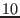

Pages of generic tracing text may give you enough information for
exploring a system. With systemtap, it is possible to analyze that
data, to filter, aggregate, transform, and summarize it. Different
probes can work together to share data. Probe handlers can use a rich
set of control constructs to describe algorithms, with a syntax taken
roughly from awk. With these tools, systemtap scripts can
focus on a specific question and provide a compact response: no
grep needed.
Most systemtap scripts include conditionals, to limit tracing or other logic to those processes or users or whatever of interest. The syntax is simple:
if (EXPR) STATEMENT [else STATEMENT] |
if/else statement |
while (EXPR) STATEMENT |
while loop |
for (A; B; C) STATEMENT |
for loop |
Scripts may use break/continue as in C.
Probe handlers can return early using next as in awk.
Blocks of statements are enclosed in { and }. In
systemtap, the semicolon (;) is accepted as a null statement
rather than as a statement terminator, so is only rarely2necessary. Shell-style (#), C-style (/* */), and
C++-style (//) comments are all accepted.
Expressions look like C or awk, and support the usual
operators, precedences, and numeric literals. Strings are treated as
atomic values rather than arrays of characters. String concatenation
is done with the dot ("a" . "b"). Some examples:
(uid() > 100) |
probably an ordinary user |
(execname() == "sed") |
current process is sed |
(cpu() == 0 && gettimeofday_s() > 1140498000) |
after Feb. 21, 2006, on CPU 0 |
"hello" . " " . "world" |
a string in three easy pieces |
Variables may be used as well. Just pick a name, assign to it, and use it in expressions. They are automatically initialized and declared. The type of each identifier - string vs. number - is automatically inferred by systemtap from the kinds of operators and literals used on it. Any inconsistencies will be reported as errors. Conversion between string and number types is done through explicit function calls.
foo = gettimeofday_s() |
foo is a number |
bar = "/usr/bin/" . execname() |
bar is a string |
c++ |
c is a number |
s = sprint(2345) |
s becomes the string "2345" |
By default, variables are local to the probe they are used in. That is, they are initialized, used, and disposed of at each probe handler invocation. To share variables between probes, declare them global anywhere in the script. Because of possible concurrency (multiple probe handlers running on different CPUs), each global variable used by a probe is automatically read- or write-locked while the handler is running.
A class of special ``target variables'' allow access to the probe point context. In a symbolic debugger, when you're stopped at a breakpoint, you can print values from the program's context. In systemtap scripts, for those probe points that match with specific executable point (rather than an asynchronous event like a timer), you can do the same.
In addition, you can take their address (the & operator),
pretty-print structures (the $ and $$ suffix),
pretty-print multiple variables in scope (the $$vars and
related variables), or cast pointers to their types (the @cast
operator), or test their existence / resolvability (the
@defined operator). Read about these in the manual pages.
To know which variables are likely to be available, you will need to
be familiar with the kernel source you are probing. In addition, you
will need to check that the compiler has not optimized those values
into unreachable nonexistence. You can use
stap -L PROBEPOINT to enumerate the variables available there.
Let's say that you are trying to trace filesystem reads/writes to a
particular device/inode. From your knowledge of the kernel, you know
that two functions of interest could be vfs_read and
vfs_write. Each takes a struct file * argument, inside
there is either a struct dentry * or struct path * which
has a struct dentry *.
The struct dentry * contains a struct inode *, and
so on.
Systemtap allows limited dereferencing of such pointer chains.
Two functions, user_string and kernel_string, can copy
char * target variables into systemtap strings.
Figure ![[*]](crossref.png) demonstrates one way to monitor a
particular file (identified by device number and inode number).
The script selects the appropriate variants of
demonstrates one way to monitor a
particular file (identified by device number and inode number).
The script selects the appropriate variants of dev_nr
andinode_nr based on the kernel version.
This example also demonstrates passing numeric command-line arguments
($1 etc.) into scripts.
Functions are conveniently packaged reusable software: it would be a shame to have to duplicate a complex condition expression or logging directive in every placed it's used. So, systemtap lets you define functions of your own. Like global variables, systemtap functions may be defined anywhere in the script. They may take any number of string or numeric arguments (by value), and may return a single string or number. The parameter types are inferred as for ordinary variables, and must be consistent throughout the program. Local and global script variables are available, but target variables are not. That's because there is no specific debugging-level context associated with a function.
A function is defined with the keyword function followed by a
name. Then comes a comma-separated formal argument list (just a list
of variable names). The { }-enclosed body consists of any list
of statements, including expressions that call functions. Recursion
is possible, up to a nesting depth limit. Figure
displays function syntax.
Often, probes will want to share data that cannot be represented as a simple scalar value. Much data is naturally tabular in nature, indexed by some tuple of thread numbers, processor ids, names, time, and so on. Systemtap offers associative arrays for this purpose. These arrays are implemented as hash tables with a maximum size that is fixed at startup. Because they are too large to be created dynamically for individual probes handler runs, they must be declared as global.
global a |
declare global scalar or array variable |
global b[400] |
declare array, reserving space for up to 400 tuples |
The basic operations for arrays are setting and looking up elements.
These are expressed in awk syntax: the array name followed by
an opening [ bracket, a comma-separated list of index
expressions, and a closing ] bracket. Each index expression
may be string or numeric, as long as it is consistently typed
throughout the script.
foo [4,"hello"] ++ |
increment the named array slot |
processusage [uid(),execname()] ++ |
update a statistic |
times [tid()] = get_cycles() |
set a timestamp reference point |
delta = get_cycles() - times [tid()] |
compute a timestamp delta |
Array elements that have not been set may be fetched, and return
a dummy null value (zero or an empty string) as appropriate. However,
assigning a null value does not delete the element: an explicit
delete statement is required. Systemtap provides syntactic sugar
for these operations, in the form of explicit membership testing and
deletion.
if ([4,"hello"] in foo) { } |
membership test |
delete times[tid()] |
deletion of a single element |
delete times |
deletion of all elements |
One final and important operation is iteration over arrays. This uses
the keyword foreach. Like awk, this creates a loop that
iterates over key tuples of an array, not just values. In
addition, the iteration may be sorted by any single key or the
value by adding an extra + or - code.
The break and continue statements work inside
foreach loops, too. Since arrays can be large but probe
handlers must not run for long, it is a good idea to exit iteration
early if possible. The limit option in the foreach
expression is one way. For simplicity, systemtap forbids any modification of an array while it is being iterated using a
foreach.
foreach (x = [a,b] in foo) { fuss_with(x) } |
simple loop in arbitrary sequence |
foreach ([a,b] in foo+ limit 5) { } |
loop in increasing sequence of value, stop after 5 |
foreach ([a-,b] in foo) { } |
loop in decreasing sequence of first key |
When we said above that values can only be strings or numbers, we lied a little. There is a third type: statistics aggregates, or aggregates for short. Instances of this type are used to collect statistics on numerical values, where it is important to accumulate new data quickly (without exclusive locks) and in large volume (storing only aggregated stream statistics). This type only makes sense for global variables, and may be stored individually or as elements of an array.
To add a value to a statistics aggregate, systemtap uses the special
operator <<<. Think of it like C++'s << output
streamer: the left hand side object accumulates the data sample given
on the right hand side. This operation is efficient (taking a shared
lock) because the aggregate values are kept separately on each
processor, and are only aggregated across processors on request.
a <<< delta_timestamp writes[execname()] <<< count
To read the aggregate value, special functions are available to
extract a selected statistical function. The aggregate value
cannot be read by simply naming it as if it were an ordinary
variable. These operations take an exclusive lock on the respective
globals, and should therefore be relatively rare. The simple ones
are: @min, @max, @count, @avg, and
@sum, and evaluate to a single number. In addition, histograms
of the data stream may be extracted using the @hist_log and
@hist_linear. These evaluate to a special sort of array that
may at present3 only be printed.
@avg(a) |
the average of all the values accumulated
into a |
print(@hist_linear(a,0,100,10)) |
print an ``ascii art'' linear histogram of the same data stream, bounds , bucket width is  |
@count(writes["zsh"]) |
the number of times ``zsh'' ran the probe handler |
print(@hist_log(writes["zsh"])) |
print an ``ascii art'' logarithmic histogram of the same data stream |
The full expressivity of the scripting language raises good questions of safety. Here is a set of Q&A:
-p3 option). Compiler bugs are unlikely to be of any
greater concern for systemtap than for the kernel as a whole. In
other words, if it was reliable enough to build the kernel, it will
build the systemtap modules properly too.
timer-jiffies.stp to reset the
counters and continue reporting instead of exiting.
open system call during that interval.
get_cycles() counter on each processor.